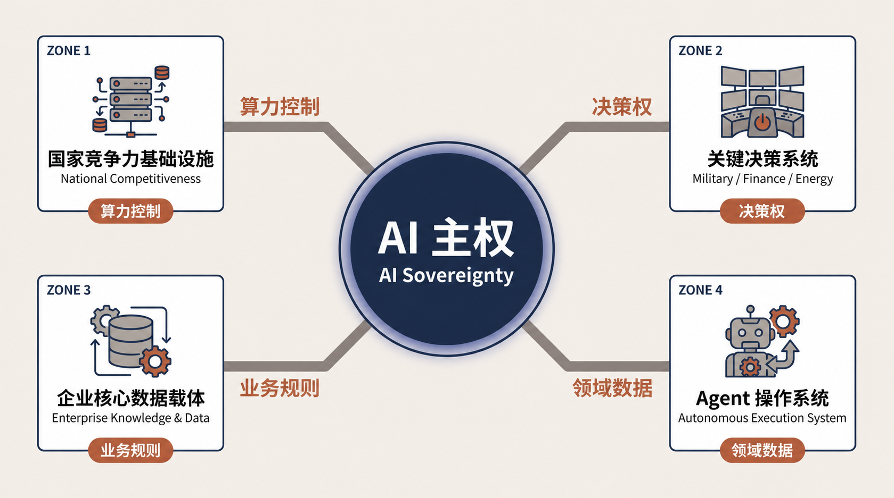
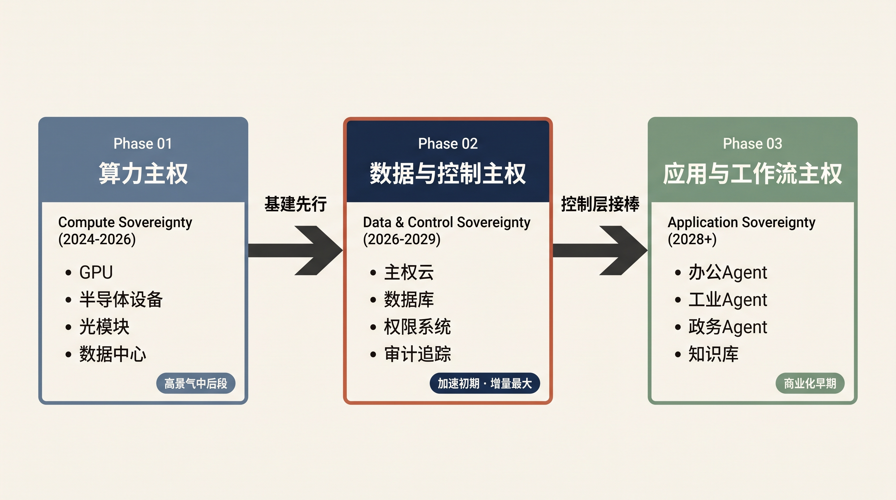
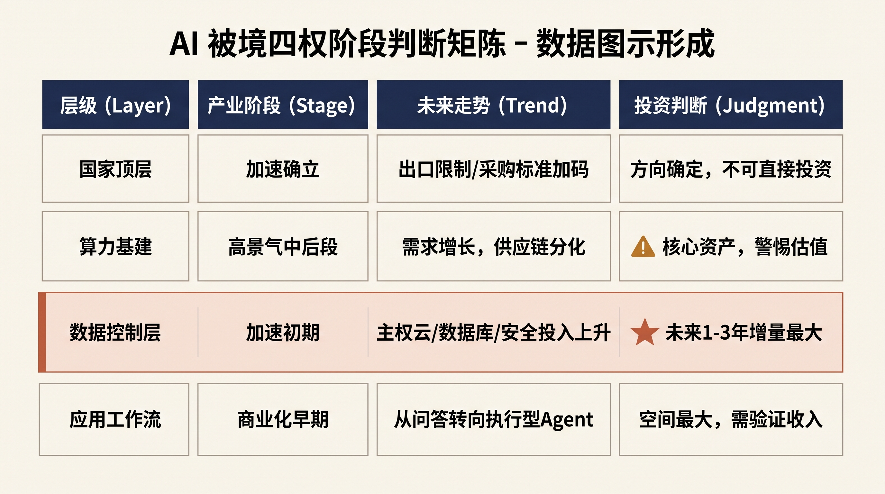
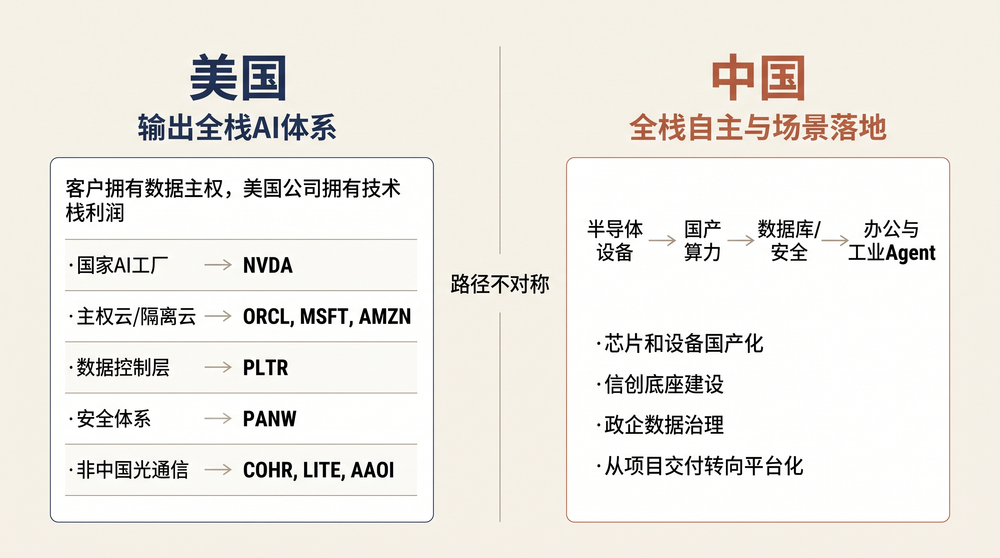
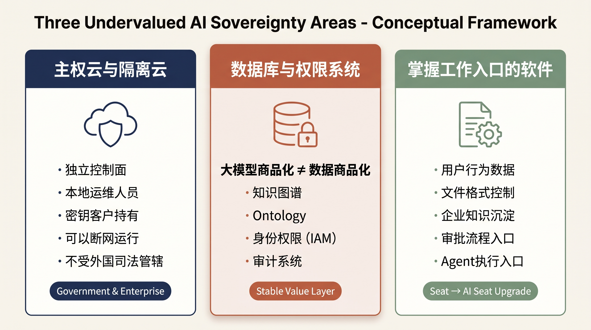

一、AI 主权到底是什么
市场普遍将 AI 主权等同于"国产替代"或信创范畴，这一框架已不足以覆盖当前的产业现实。
核心逻辑是：当 AI 仅承担对话角色时，主权约束不强；但当 AI 进入信贷审批、电网调度、供应链指挥、ERP 系统调用等关键决策场景时，谁控制算力、谁能访问数据、谁设置权限规则、谁定义业务逻辑，即构成实质性的权力分配问题。
全球政策都在往这个方向走
美国 AI 行动计划已将 AI 划分为三大支柱——创新、基础设施、国际安全——并计划向盟友输出覆盖硬件、模型、软件、应用及标准的"全栈 AI 包"。其目标并非单纯销售 GPU，而是输出整套技术标准与生态体系。白宫 AI 行动计划 2025.07
欧盟正推进 AI Factory、AI Gigafactory 与主权云建设，InvestAI 计划目标调动约 2000 亿欧元投资，核心诉求明确：降低对美国云服务商与算力体系的依赖。EC AI Continent Plan
中国"人工智能+"政策同时推模型、数据、算力、应用和安全，重心从"建算力"往"工业、政务、能源场景落地"转。国务院"人工智能+"意见 2025.08

二、三层框架：资本流向与价值分布
算力主权
芯片、服务器、光模块、数据中心。支出最大、收入兑现最快，但市场定价已经普遍不低，正在进入分化阶段。
应用与工作流主权
办公 Agent、工业 Agent、政务 Agent。长期空间最大、数据飞轮最强。应用层的关键验证标准，是能否把对话能力嵌入可计费、可复用的业务工作流，形成稳定的商业闭环。
第一阶段：算力基建——景气维持，企业分化加剧
算力层的资本开支规模确凿。2024-2026 年市场定价路径清晰：英伟达 → 国产算力 → 光模块 → 半导体设备。这一轮动序列本身说明产业景气趋势不变，但市场定价已先行反映。
当前核心矛盾在于分化：谁能实现稳定交付？谁已获得客户验证？谁能维持毛利率扩张？谁在出口管制框架下供应链不受制约？市场已从"需求驱动普增"进入"基本面驱动的企业间分化"阶段。
第二阶段：数据控制层——当前定价尚不充分
这一层的商业模式本质上优于算力层：算力和模型属于可采购资产，但数据、权限与业务知识具有不可替代性。
Palantir 是一个典型参照。其核心竞争力不在于拥有客户数据，而在于将客户的数据、权限、业务对象、工作流与 Agent 统一映射至 Ontology 框架，使客户自行定义"谁能访问什么、模型可执行哪些操作、哪些动作须经审批"。Palantir Sovereign AI Whitepaper
这一层的商业模型存在几个结构性优势：软件毛利率显著高于硬件、客户迁移成本较高、订阅收入具备可预测性、使用反馈可形成数据复利。但短板同样明显——采购周期偏长、定制化程度较高，目前多家"中国版 Palantir"仍处于概念阶段，尚未形成标准化产品。
第三阶段：应用层——想象空间最大，收入兑现周期最长
最终竞争不在 GPU 数量，而在于谁能将 AI 深度嵌入真实业务流程。文档协同、审批流转、制造排产、电网调度、风控决策——这些场景的入口已被现有软件厂商占据。核心问题是这些公司能否将传统席位升级为 AI 席位、将一次性项目转化为持续性订阅收入。
当前的核心矛盾是：产品发布密集，但形成规模化收入、实现提价与高续费率的公司仍为少数。
| 层级 | 产业阶段 | 走势判断 | 产业观察 |
|---|---|---|---|
| 国家顶层 | 加速确立 | 出口限制、采购标准持续加码 | 方向确定，属顶层政策，不直接映射具体企业 |
| 算力基建 | 高景气中后段 | 需求增长、供应链分化 | 产业支撑明确，定价已较充分 |
| 数据控制层 | 加速初期 | 主权云/数据库/安全投入上升 | 未来 1-3 年产业增量最大 |
| 应用工作流 | 商业化早期 | 从问答转向执行型 Agent | 空间最大，收入还需验证 |

产业方向长期向上——这个判断置信度很高。但"所有与主权概念相关的企业都会同步受益"——这个判断置信度很低。需要严格区分具备真实产业支撑的企业与仅依靠概念标签的企业。
三、中美两条路径

美国：输出"美国技术体系下的主权"
美国的基本逻辑是：各国可以保留自己的数据和应用控制权，但底层尽量用美国芯片、美国云、美国软件和美国标准。
一句话概括这种不对称：客户保留数据主权，但技术栈利润归属美国公司。
| 方向 | 代表企业 | 逻辑 |
|---|---|---|
| 国家 AI 工厂 | NVDA | 全球 AI 基建的通用底座 |
| 主权云 / 隔离云 | ORCL, MSFT, AMZN | 政府和大企业专属云需求爆发 |
| 数据与业务控制层 | PLTR | Ontology + Agent，政企数据治理标杆 |
| 安全体系 | PANW | AI 安全新边界 |
| 非中国光通信 | COHR, LITE, AAOI | 供应链替代链 |
中国：从硬件自主到全栈落地
此前阶段中国的重点方向集中于芯片国产化、国产服务器与信创底座，该阶段仍在推进，但下一阶段的产业逻辑将逐步扩散。
演进路径大致为：半导体设备 → 国产算力 → 数据库/安全 → 办公与工业 Agent。
核心变量在于能否从项目制交付转向平台化与订阅收入模式。若持续依赖单一项目型收入，软件层的定价中枢将受到结构性压制。
四、光模块事件的位置
美国拟限制进口中国新型号光模块（目前还在起草阶段，可能修改或搁置）。这不是一个孤立事件——它是算力基础设施主权继续升级的信号，但注意，它不代表"国产光模块全面受益"。Reuters 2026.08.04
这件事反映三个变化：
第一，光模块已经被视为数据中心安全边界的一部分，不再是纯粹的通用元器件。
第二，供应商的国籍和控制权会进入采购标准，海外产能和合规身份变得值钱。
第三，全球 AI 供应链正从"效率优先"转变为"安全性+效率双重约束"。
COHR、LITE、AAOI 是美国替代链上的供应方，短期内可能承接转移订单。中际旭创、新易盛面对的是美国市场准入不确定性，其海外收入占比高，受到的冲击方向与替代链企业相反。光迅科技国内收入占比较高、海外敞口相对有限，但并不意味着其具备确定性增长动力。
五、三个可能被低估的方向

市场当前充分交易的是 GPU、国产算力、光模块、半导体设备。下面三个方向还没有被完全定价，可能是下一轮的主线：
主权云与隔离云
政府和大企业要的不是"数据存在本国"这么简单。他们要的是独立控制面、本地运维、密钥自己拿、能断网运行、不受外国法律和母公司远程控制。
数据库与权限系统
大模型会慢慢商品化，但数据、权限、业务语义不会。数据库、知识图谱、Ontology、身份权限和审计系统，可能比模型层拿到更稳定的价值。
掌握工作入口的软件
文档、办公、ERP 天然掌握用户行为、企业知识、审批流程和 Agent 执行入口。关键不在于增加一个聊天窗口，而在于能否把代码、文档、研究与自动化任务统一到同一入口，并把传统席位升级成可计费、可复用的 AI 席位。
六、风险提示
政策落地比想象慢
出口限制措施存在修改甚至搁置可能。政府采购与信创推进受行政周期约束，收入兑现时点可能滞后于市场预期 1-2 个季度。
市场定价已处于较高水平
无论 A 股还是美股，主权概念相关企业的市场定价普遍位于高位，PLTR 与寒武纪为典型例子。市场情绪一旦转向，调整幅度可能显著超越基本面变化。
概念落空风险
大量"中国版 Palantir"仅有概念标签，缺乏标准化产品与可复制收入模型。若持续以定制化交付为主，利润率将面临持续性压缩。
地缘突变风险
若中美关系出现阶段性缓和、出口限制放松，短期可能有利于部分企业，但会重构整个国产替代的定价逻辑框架。
最后
AI 主权并非短期题材，而是正在演进的产业趋势。全球 AI 体系从"单一供应链"走向"多区域技术栈"，这一方向在未来 3-5 年具备较高确定性。
在三层框架中，应用与工作流主权是最被低估、也是长期价值最大的一层。真正有价值的应用，不只是回答问题，而是能够完成金融研究、代码生成、文档处理等高密度任务，并把个人和团队的工作流沉淀为可复用资产。这正是 AI 主权从“算力领先”走向“应用领先”最后一公里的关键能力。能够占据工作入口、积累数据飞轮、形成网络效应的产品，将是这一轮主权周期中确定性最强的资产。
以上为研究框架梳理，所有提及企业仅用于说明产业逻辑，不构成投资建议。